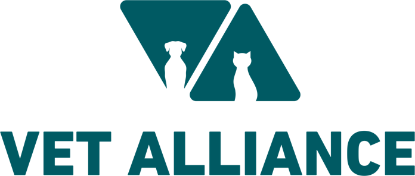
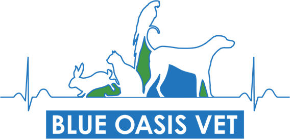

XS
S
M
L
100%

Our Journey
Two stories · One alliance
Modern Vet Track
Blue Oasis Vet Track
Vet Alliance Track
Modern Vet

Blue Oasis Vet
Vet Alliance
1995
Modern Veterinary Clinic founded
1st patient — Snoopy
2007
1st Hip Replacement Surgery
in the UAE
20 team members
2018
JVC Clinic opens
2020
JLT Clinic opens
Pet Taxi launches
1,000,000 patients treated
2021
Downtown Clinic opens
1st Open Heart Surgery in the UAE
1st 24-Hour Hospital
2022
Palm Clinic opens
1st Cataract & Glaucoma
1st Craniotomy in the UAE
2023
Khawaneej Clinic opens
263,036 T-N-R's performed
2008
Blue Oasis Vet founded
2016
First Vet MRI
in private practice
2019
Blue Sky Pet Relocation founded
2022
Blue Oasis D2 Clinic opens
2024
Vet Alliance Formed
Modern Vet
Founding Member
Blue Oasis Vet
Founding Member
Late 2024
Blue Sky Pet Relocation joins
Floof launches
1st V-Clamp Surgery in the region
200th employee joins
2025
Opened GCC's 1st Veterinary Referral Centre
Azizi Riviera Clinic opens
Vienna Vet joins
Today
11 clinics · 70+ veterinarians
One group. One standard of care.